6.810 Engineering Interactive Technologies (fall 2021)
Pset 5: Blob Detection & Gesture Recognizer
In this problem set, you will add blob detection to the grayscale image you generated last time to extract the touch point coordinates for each finger. After this, you will implement a gesture recognizer that can detect different finger gestures on your multi-touch pad and then execute the corresponding functionality. Finally, you will also visualize how hard the user is pressing with each finger on the multi-touch pad by visualizing pressure in 3D.
Steps:
- Implement Blob Detection
- Drawing Blobs into the Image
- Implement Gesture Recognizer
- Design Customized Finger Gestures
Get a new multi-touch pad from a TA:
If you have the feeling your printed multi-touch pad is degrading, let us know and we can give you one that we fabricated to test if it's really the multi-touch pad or something in your circuit/code.
(1) Implement Blob Detection
In the last pset, you created a grayscale image in which brighter pixels correspond to higher signal values. While you can now determine with your eyes where the multi-touch pad was touched, your program should also be able to do this automatically and tell you at which (x,y) coordinate it sees a touch point. To do this, we need to write code that detects the white blobs in the image. This is called blob detection.
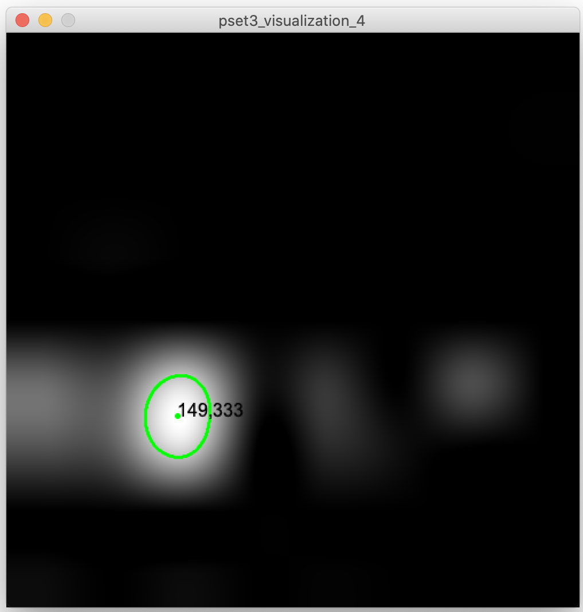
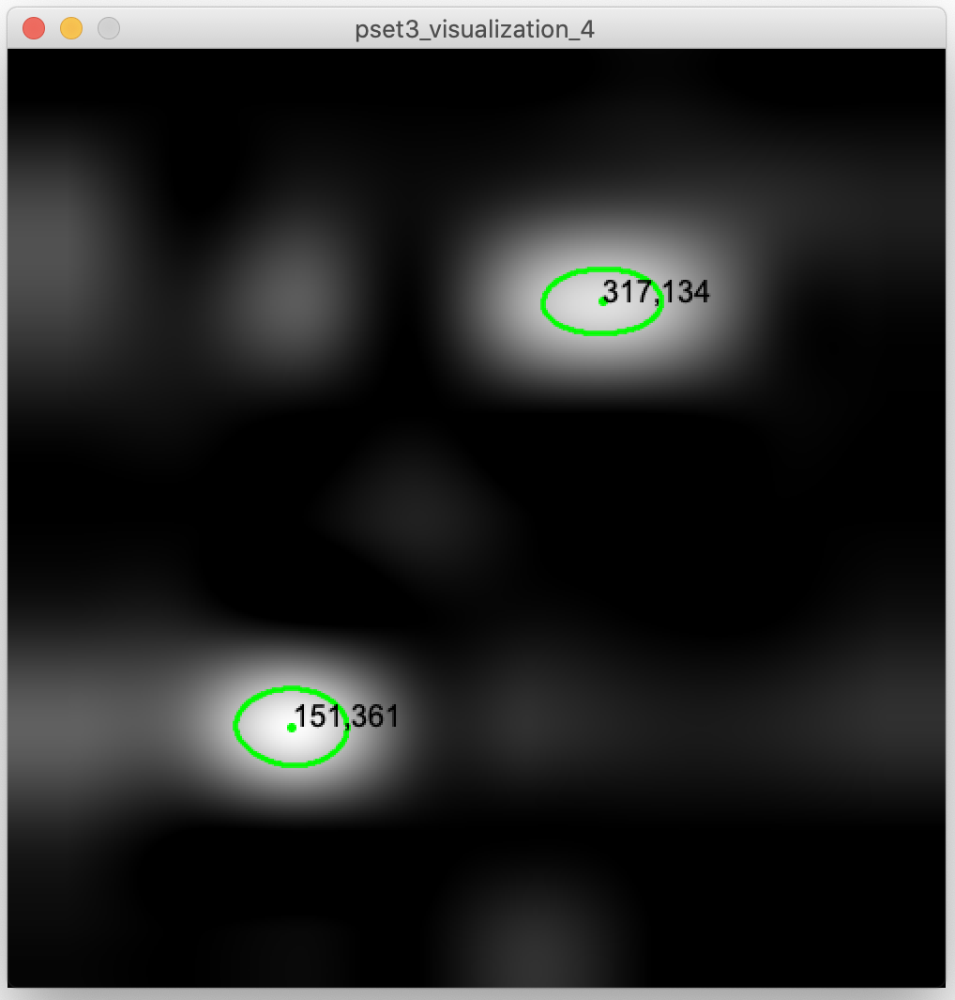

Library for Blob Detection: Luckily, somebody else has already provided a library for blob detection and you can see the BlobDetection Reference here for details on the different functions. You already installed that library at the beginning of the last pset and we already imported it into the skeleton code using the following line:
import blobDetection.*;
Using Live Data or Prerecorded Data: Similar to pset4, you can either program this part directly on live data or you can use our pre-recorded multi-touch pad data for testing the blob detection.
Constructing BlobDetection Object: First, construct a new object of the BlobDetection class, for the size parameters use the large interpolated grayscale PImage height and width. You can find the BlobDetection Reference here.
Performing Blob Detection: Next, you can use the BlobDetection instance's computeBlobs() function to detect the blobs.
Retrieving Blob Number: Use the BlobDetection instance's getBlobNb() function to retrieve the number of blobs (i.e. fingers) in the image. If you get '0' for your blob number no matter how many fingers you have on the touch pad and how much you press, read below on how to debug this.
Improving your Results by Changing the Threshold: If your blob detection is not finding all the blobs in your image, consider the following: Before performing blob detection, the library automatically converts your image from a grayscale image (pixel values ranging from 0 - 255) into a black/white image (pixels are either 0 or 255). The reason the library does this is because blob detection groups pixels of similar color together to find 'blobs' and that is easier to do when pixels are either black or white and not something in between. The library automatically picks a threshold value, for instance, it may decide to convert all pixels with a value below '100' to black (i.e. '0') and all pixels above '100' to white (i.e. '255'). If you are not getting any blobs (i.e., groups of white pixels), it is likely that during thresholding all pixels were converted to black and no white pixels are left because the threshold value was set too high. To see if a lower threshold would leave you with more white pixels, you can use the setThreshold() function to determine which brightness levels from 0-255 should be taking into account when searching for blobs. Note that the threshold takes as input a float value from 0-1 so you need to scale your 0-255 values accordingly. Once you set your custom threshold, check again if you now get the right blob number. Note that the threshold value will be different for our prerecorded data vs. live data from your multi-touch pad, so you will have to adjust it when you switch to live data. The threshold value will also be different depending on the environment conditions (e.g., more humid air one day than the other) or the surface your multi-touch pad is placed on, so be prepared to adjust the threshold for these situations.
(2) Drawing Blobs into the Image
Drawing Blob Centers and Contours Into the Image: Next, we want to extract for each blob: (1) the center of the blob (i.e., center of the touch point), and (2) the contour of blob (i.e., the outline of the touch point). We can then draw the contour of the touch point into our image, and also add the center of the touch point and its touch point coordinates (x,y) into our PImage. To retrieve the information from a specific blob, you can use the BlobDetection instance's getBlob() function, which returns a 'Blob' object and then use its instance functions to get its blob center and edges (refer to the Blob class in the documentation here). Note that the contour is provided as a list of edges (i.e. lines).
Implement this in the drawBlobsAndEdges() function in the skeleton code:
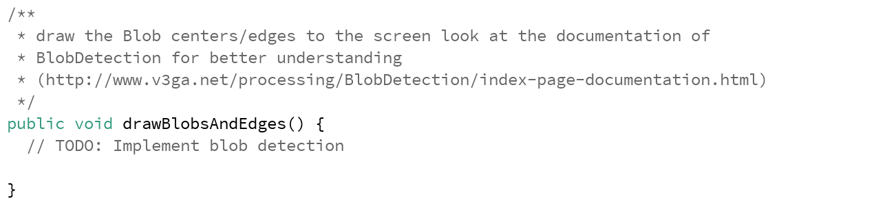
Testing your Blob Detection: We recommend you test your blob detection with 1 finger, 2 fingers, and 3 fingers touching the multi-touch pad to see if it can reliably determine where the finger is touching. This will become important for the next part of this problem set in which we will build a gesture recognizer. You may want to go back to section (1) and further refine your threshold until you find a setting that works reliably.
(3) Implement Gesture Recognizer
Once you have the blob detection working, you can move on to build the gesture recognizer. The goal is to be able to draw with your finger onto your multi-touch pad and have the multi-touch pad recognize what was drawn. For instance, if you swipe from left to right, your code should recognize that you made this gesture and if you draw an 'A' your code should know that an 'A' was drawn.
$1 Unistroke Gesture Recognizer: Luckily, you don't have to implement the gesture recognizer from scratch. Instead, you can use the $1 Unistroke Recognizer, which is available as a Processing library. The $1 Unistroke Gesture Recognizer is part of the so-called $1 Gesture Recognizer family, i.e. a set of different gesture recognizers with different capabilities, such as single stroke gesture recognition, multi-stroke gesture recognition etc. In this pset, we are going to use the $1 Unistroke Recognizer since it is the only one that is available for Processing as a library.
Gestures the $1 Unistroke Recognizer can detect: Unistroke means that the gesture recognizer can only recognize gestures that are made by one finger in one continous stroke. For instance, consider the 2 gestures shown below designed for the letter "A". The left one is written in one continous stroke and thus can be recognized by the $1 Unistroke recognizer. The right one, however, is written in two separate strokes and thus cannot be recognized. Similarly, you can recognize a single finger swipe left/right gesture but you cannot recognize a zoom gesture with two fingers since that would require combining two separate strokes into one gesture. The $1 family also has a multi-stroke recognizer but as mentioned previously it is not available as a library for Processing.
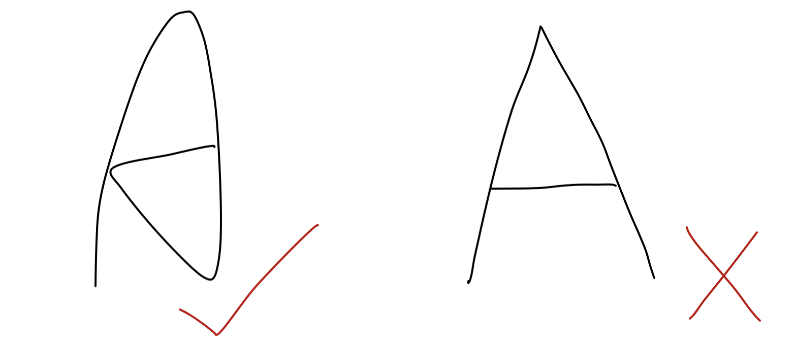
Stroke Orientation: The gesture recognizer ignores the stroke orientation. Consider the example below on the left, which shows the same gesture but executed in different orientations on the multi-touch pad. The gesture recognizer automatically compensates for the change in orientation and will detect that both of the gestures are the same.
Stroke Direction: While the recognizer ignores stroke orientation, it considers stroke direction, which corresponds to the vector direction of the line along which your finger moves. For example, the two gestures shown below on the right are visually identical but in the first gesture we start on the top left, while in the second gesture we start on the bottom left. Therefore, although visually the same gesture, the $1 recognizer is able to distinguish them as two different gestures.
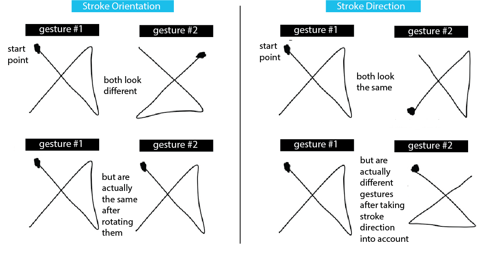
Try the Gesture Recognizer for yourself on the Demo Webpage: Before you move on, try out the interactive demo of the $1 Unistroke Recognizer that you can find here on this website. Scroll down to the Demo section and you see 16 different gestures you can draw into the gray window on the right side. Draw each of the gestures once to get a feel for how different gestures are designed and how well they can be classified. After you drew a gesture, you will see its classified name at the top of the window. You can also make your own gesture by first drawing your custom gesture into the gray drawing window and then giving it a name in the Add as example of custom type: field, then click Add. If you now draw your custom gesture again, it should be correctly classified.
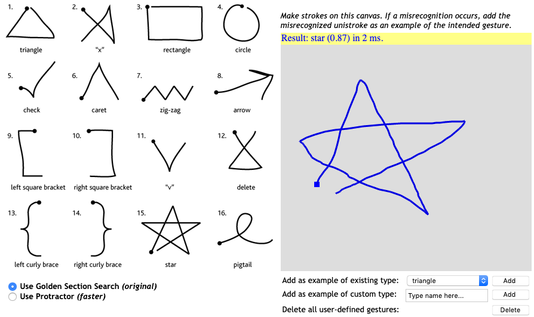
Import $1 Unistroke Recognizer Library into Processing: Now that you know a bit more about what the $1 Unistroke recognizer can and cannot do, you can move on to use the recognizer to detect gestures on your multi-touch pad. Start by importing the '$1 Unistroke Recognizer' library by going to Sketch -> Import Library and finding it through the search bar. Next, import the $1 Unistroke Recognizer library into your Pset Processing code.
import de.voidplus.dollar.*;
Instantiate new Gesture Recognizer: Construct a new object of the one dollar recognizer with:
OneDollar oneDollar = new OneDollar(this);
Turn on Console Plotting: Turn on console plotting for the gesture recognizer using the line below. Later, when you make your gestures, the gesture recognizer will immediately print the name of the gesture on the console and also provide how similar it is to the closest match from the recorded template gestures (e.g. 84% similar).
oneDollar.setVerbose(true); // activates console plotting
Creating a new finger gesture: Next, you will create a new finger gesture. For starters, we will use a 'V' gesture, which is one of the most reliable ones that can be detected. Other reliable gestures are triangle, zigzag, checkmark, and anything that has some unique features. A circle, for instance, is one of the harder gestures to recognize due to its smooth outline that is easily susceptible to noise. To create a new finger gesture, you can use the following function:
oneDollar.learn(String gesture-name, int[] x-y-coordinates); // {x1, y1, x2, y2, x3, y3, x4, y4, ...}
Recording x/y coordinates for New Finger Gesture: While you could obtain the x-y-coordinates for your gesture template by tracking finger input from your multi-touch pad, we recommend not doing this and instead recommend that you draw the gesture with the mouse on screen and record the x-y coordinates from the mouseDragged() event. The reason for this is that the drawing with the mouse will give you very clear tracking points for creating your template gesture. Later on, when you draw the gesture with your multi-touch pad during actual use, having the clean data from the mouse dragging on screen will make the gesture recognition more fault resistant. In contrast, if you record your template gesture on the multi-touch pad, you will already have some noise in the data and it will be harder to match a gesture when there is additional noise during actual use later on. Below you see a recording of all the coordinates for our 'V' gesture that we then feed into the learn() function to add our new gesture.

Connect Finger Gesture to a Callback Function: Now that you have added your custom 'V' finger gesture to the gesture recognizer, you next have to define which function should be called when the gesture is being detected. Such a function is called a callback function and it will be triggered every time the algorithm detects the corresponding finger gesture. You can bind the finger gesture to a callback function via the command below. Note that the parameter callback-function-name is the name of the function without parenthesis and parameters.
oneDollar.bind(String gesture-name, String callback-function-name);
Implement the Callback Function: Next, you need to implement the callback function. The callback function has to have the format shown below, i.e. contain the same number of parameters and parameter types and return void. The function name and parameter names, however, are up to you. If upon recognizing the gesture, you just want to execute some action, you can simply add that code into the function body. If you want to build a location dependent gesture, you can also check where on the multi-touch pad the gesture started or ended using the coordinates provided by the callback function.
void foo(String gesture-name, float percentOfSimilarity, int startX, int startY, int centroidX, int centroidY, int endX, int endY){
// do something when the gesture is detected
}
Tracking the finger gestures: Now that you have defined how your gesture looks like and what function should be called when it is detected, you still have to tell your code when it should start looking for the gesture. We want to start tracking gestures when our code detects a finger blob.
Therefore, you need to add the tracking function below in the blob detection method where it determines if a finger was successfully detected. The x/y coordinate in the function are the x/y coordinate of your touch point.
oneDollar.track(int x-coordinate, int y-coordinate);
Note that you don't have to 'stop' tracking. The track() function will only be executed when Processing goes through its loop and detects a finger blob, and if no finger has been present for a while, i.e. no new data is fed to the gesture recognizer, the recognizer will automatically determine that the gesture has ended and will provide its best guess at what gesture was executed.
Visualize Gesture Detection Result: Finally, once your gesture is detected, your callback function should visualize the detected gesture. For this, you should write the name of the detected gesture into the Processing UI window as shown in the top left corner of the images below and also draw the touch point centers into the window (discard the blob contour). The touch point centers should be visible in the window for a while even after you lift your finger from the multi-touch pad (e.g., show them for another 2 seconds before removing them from the window). You can implement this by storing the touch point centers in a separate array. Draw the array points when the array is not empty, and clear the points in the array whenever it exceeds the 2 seconds time after the gesture was recognized (use the millis() and System.nanoTime() functions from PSet 4 for this). The image down below shows an example of the UI when the "Z" gesture is recognized.
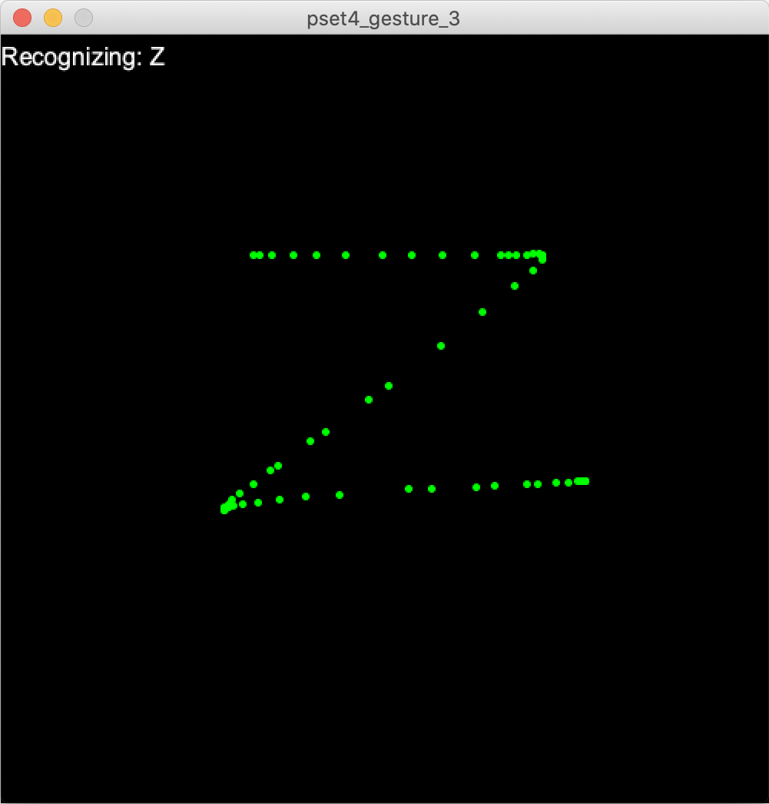
Design Custom Finger Gestures: Now that you have implemented the basic gesture recognition, let's go ahead and implement 3 different finger gestures that can be recognized by your multi-touch pad. You can implement recognizing letters (A, C etc.), 2D shapes (triangle, circle etc.), and symbols (check mark etc.). Note that in good gesture design, the gesture should be related to what function is being called. For instance, you cannot draw a 'star' and associate it with a 'smile'. Instead, it would be better to draw a 'half circle', which more closely resembles a 'smile'. Similarly, gestures cannot be too abstract. For instance, you cannot have your finger draw one straight line on the multi-touch pad and the system recognizes it as 'fish'. Instead, there are better one-stroke gestures that could represent a fish outline. Once you have three gestures working, record a short video as described at the end of this pset in 'deliverables'.
(4) Visualize Touch and Pressure in 3D
In the previous section, we used the touch locations to recognize gestures. Next, we will also detect touch pressure and visualize it in the user interface. To visualize the touch pressure, you are going to use a 3D visualization, in which the height of the touch point represents how much pressure is applied. Below you can see an example: on the left side only little pressure is applied and the touch bar is small, whereas on the right side a lot of pressure is applied and the bar is much higher.
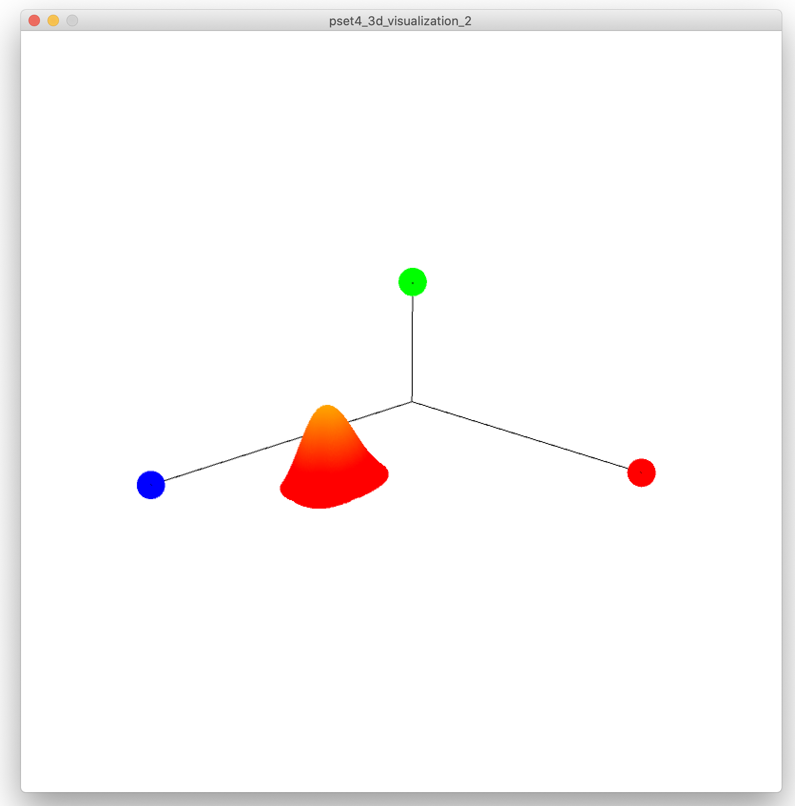
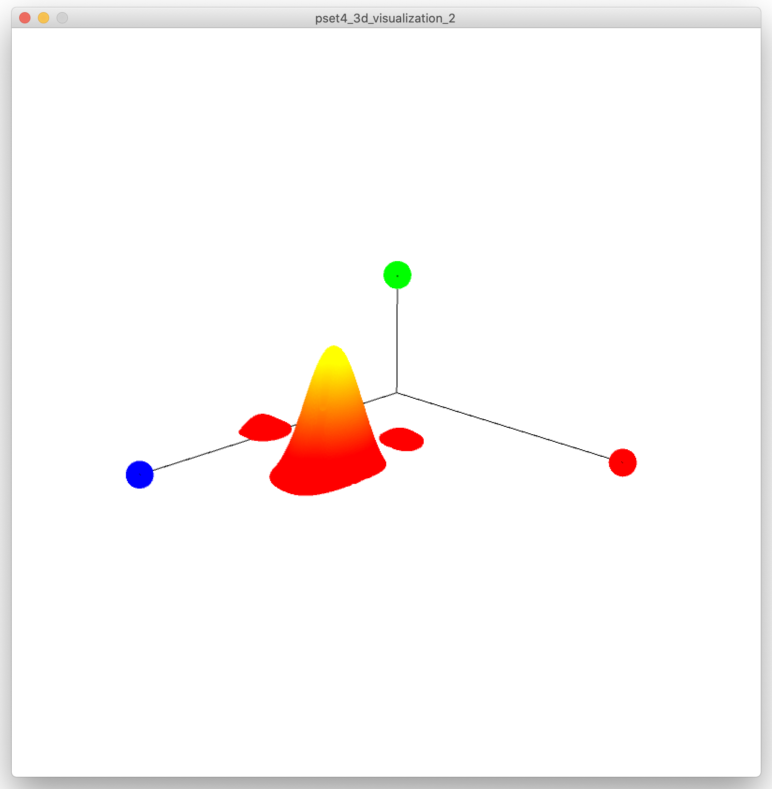
To recognize touch pressure, you can look at the brightness of the touch point (and why would it be brighter if I pressed harder? because more finger area touches there leading to more cumulate capacitance?)
For this part of the PSet, you are going to do the following three steps:
- draw three axis for x, y, z on screen for the 3D visualization coordinate system
- implement functionality to move the camera around the 3D visualization scene via keyboard input, i.e. the camera will be able to zoom in/out of the scene, rotate around the scene, and move up/down with respect to the scene when the corresponding keys are pressed
- update the 3D visualization with the touch points and touch pressure based on interpolated PImage of your touch points from Pset3
Download Skeleton Code
Start by downloading the skeleton code for the PSet4 3D visualization from here.
Once you opened the skeleton code, you will see that there are some new variables and functions that are related to the 3D visualization (e.g., the axis and camerapos parameters and the drawAxis(), cameraViewControl() and update3DImage() functions). The remaining functions (readSerial(), setBaseLine(), substractBaseLine(), setColors(), and interpolate()) are from pset3 and you only have to move your code over to fill them out.
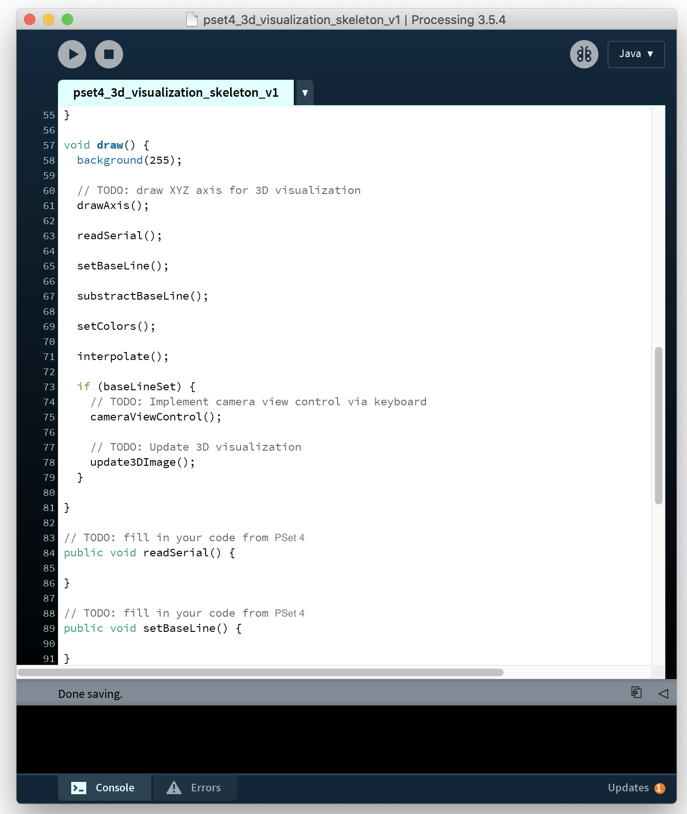
Drawing the XYZ axes for 3D Visualization
You will start by drawing the XYZ axes for 3D visualization in the drawAxis() function.
You can draw them as a standard Cartesian coordinate system. Note that we are in 3D now, not 2D so you need 3 coordinates for defining the positions of your points/lines.
Cartesian 3D systems are often described as "left-handed" or "right-handed."
If you point your index finger in the positive y direction (down) and your thumb in the positive x direction (to the right), the rest of your fingers will point towards the positive z direction.
It's left-handed if you use your left hand and do the same.
In Processing, the system is left-handed, as follows:
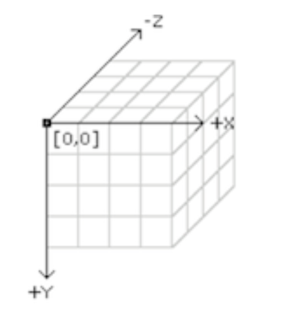
The length of the X and Z axes should be the width and height of your interpolated PImage.
The length of the Y axis should be slightly higher than the maximum pixel value (brightness) of your interpolated PImage so you have some space at the top.
Notice that you should draw the Y axis (and later sensing data on y axis) in negative direction so it is pointing "up".
In addition to generating the axis lines, you need to color the axis by drawing a colored dot at their end.
We will use red for the x-axis, green for the y-axis, and blue for the z-axis (since "RGB" corresponding to "XYZ").
Once you finish the drawAxis() function, you should have something that looks like this (note that the height of your y-axis depends on the brightness values you get in your PImage and may not be shown to scale here):
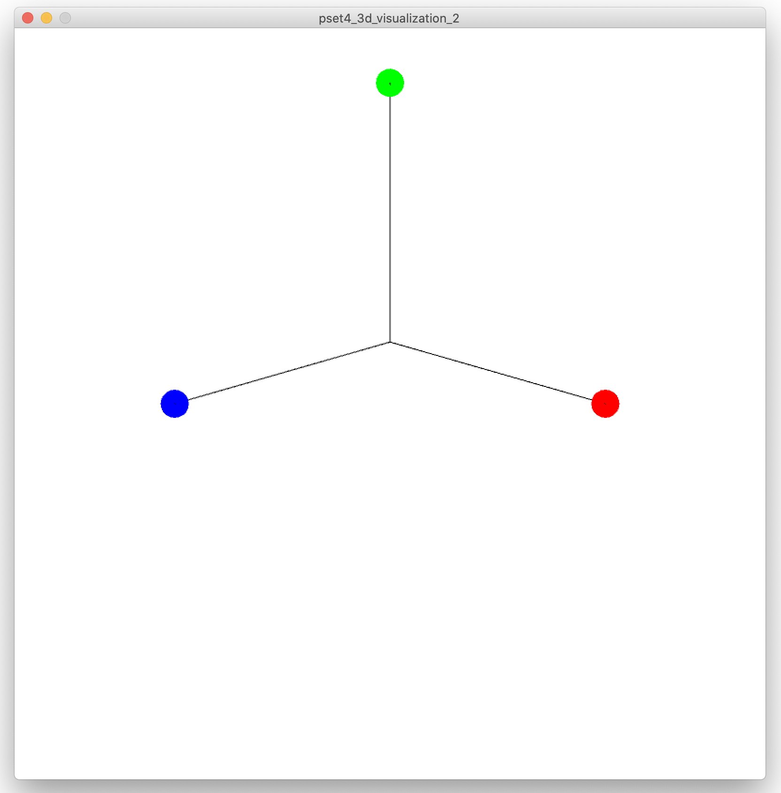
Moving the Camera Around the 3D Visualization via Keyboard Input
Without camera motion, it is kind of hard to see if you really succeeded in drawing your axis correctly or if it just 'looks' correct from the 2D perspective we have but in reality the lines are all over the place in 3D space.
To facilitate debugging of issues like this, we will implement camera control, i.e. you will be able to move around the camera by pressing keys on the keyboard to zoom in/out and move the camera around the scene.
Initialize Camera in Processing
Processing provides a Camera Class for implementing camera movement. You can find the camera class documentation here.
To get started, initialize a new camera in Processing with the following method:
camera(float eyeX, float eyeY, float eyeZ, float centerX, float centerY, float centerZ, float upX, float upY, float upZ);
Let's look at what all these parameters are:
eye x/y/z: This is the camera's 3D position in space, i.e. where it would be physically located if it was a camera in real-life.
center x/y/z: The center of the scene defines how the camera is angled. For instance, if the center of the scene is lower than the camera, then the camera will look down, resulting in a bird's eye view. Similarly, if the center of the scene is higher than the camera, then the camera will look up, resulting in a frog's eye view.
up x/y/z: This defines which axis is facing upwards. You can use values from 0 to 1 to -1. If you use a -1, the camera will be flipped and face up-side-down. In our case, we want to keep it simple and use for x,y,z 0,1,0 since y is pointing upwards.
When you initialize your camera, you may want to start by using the default parameter values we provide in the code, which should give you a reasonable start for a good viewport. If you see nothing in your view after initializing the camera, you may be facing the wrong way with you camera, e.g. the scene may be behind you, which causes you to only see a white screen with nothing on it.
Zooming in/out
Moving the camera position (eye position) closer or further away from the 3D visualization results in a zooming in/out effect (see images below).
Implement a zooming effect so that when you press the key "E" you zoom in and if you press the key "Q" you zoom out (i.e. change the distance between camera position and the 3D coordinate origin).
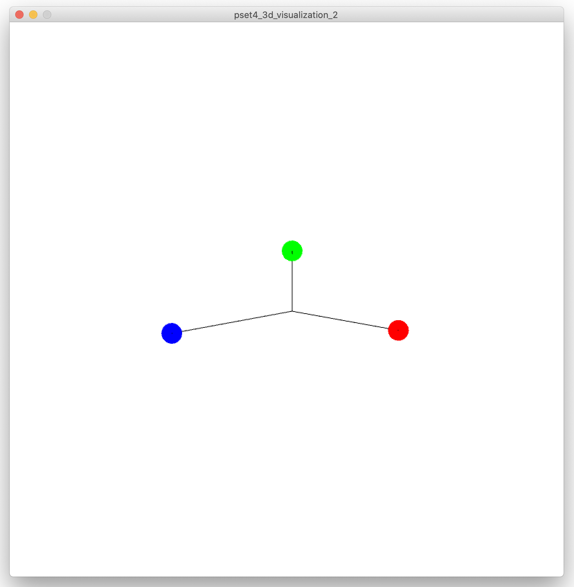
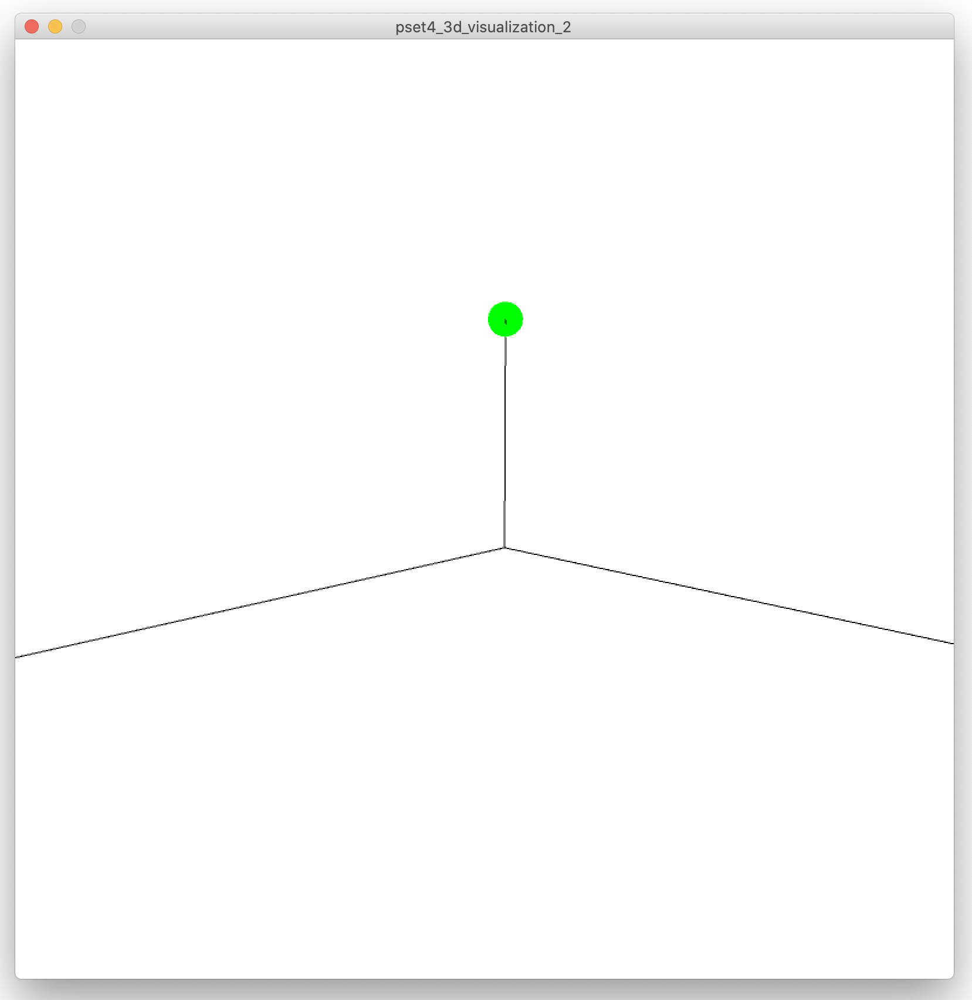
Rotating in the X-Z Plane
To move the camera in the x-z plane around the 3D visualization, you need to keep it at the same distance from the 3D visualization at all times (see images below).
This is best accomplished by moving the camera on a circle around the scene.
Update the camera position (eye position) to accomplish this (you have to do some math here, check out how radians work again to help you with this).
If you press the key 'D' you should rotate right and if you press the key 'A' you should rotate left.
Note that you only have to update the camera's position.
Since you set the scene's center x/y/z to be the 3D visualization, the camera will automatically rotate while moving around the 3D visualization to always look at it.
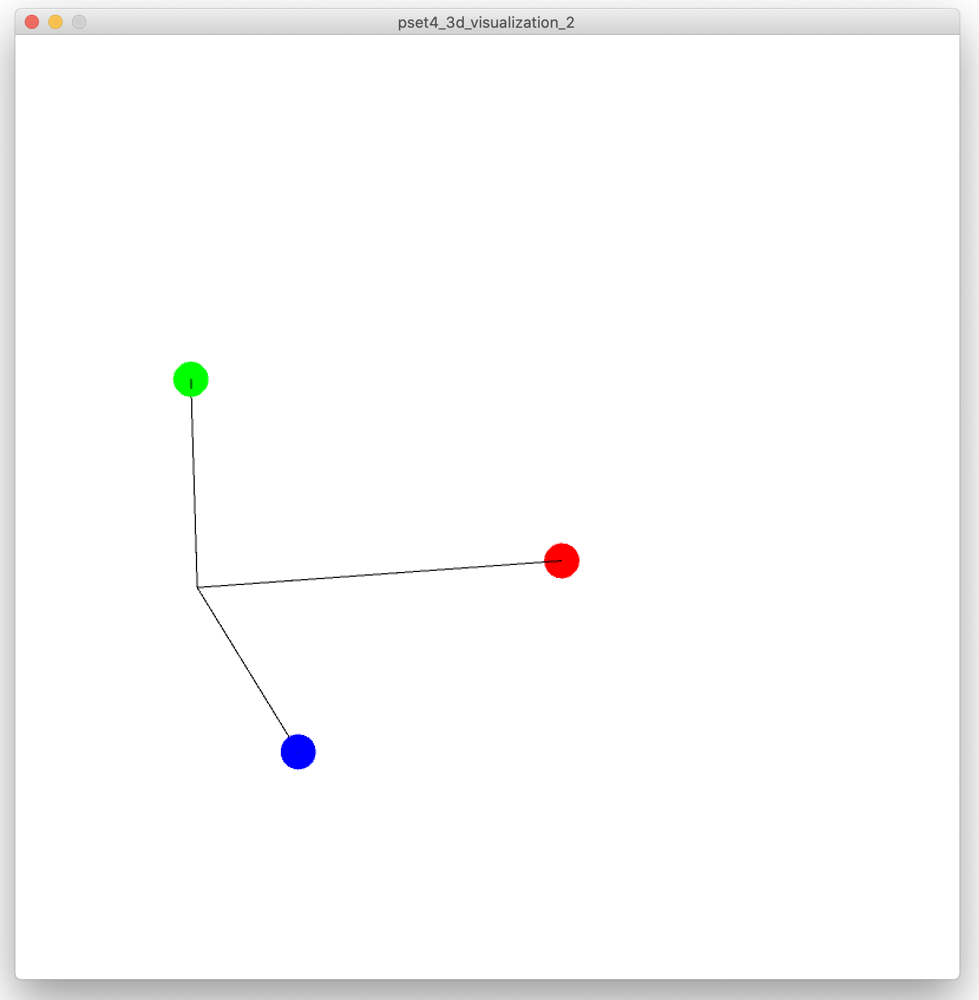
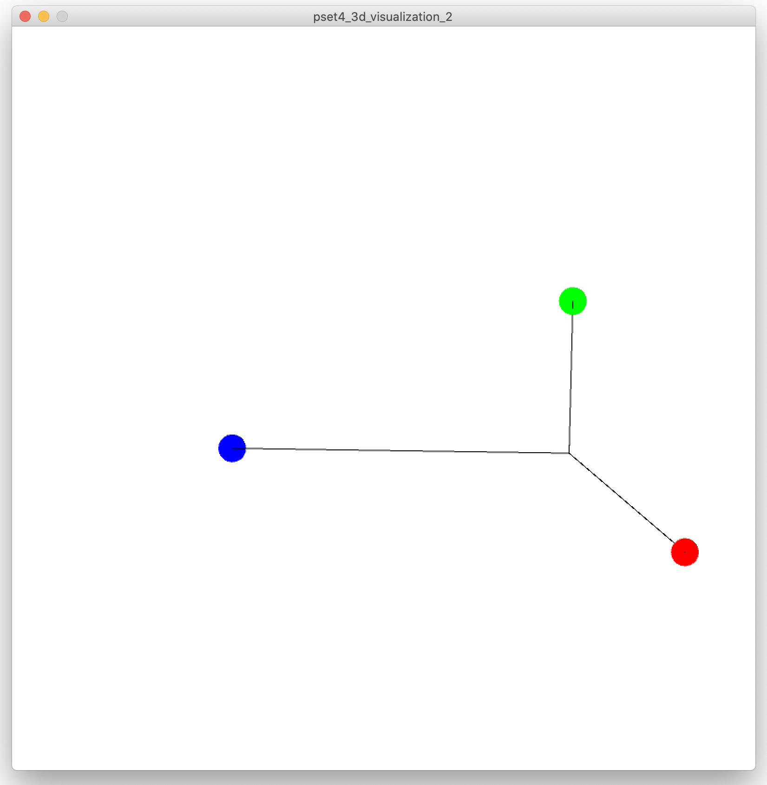
Changing the Camera's Y-Axis Height
To move the camera along the y-axis, you need to change the camera's eye position again, but this time only along the y-axis.
Pressing 'W' on the keyboard should move the camera up and pressing 'S' on the keyboard should move the camera down along the y-axis as shown in the image below.
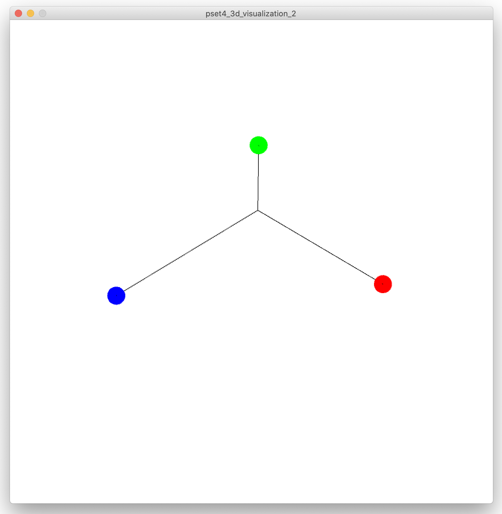
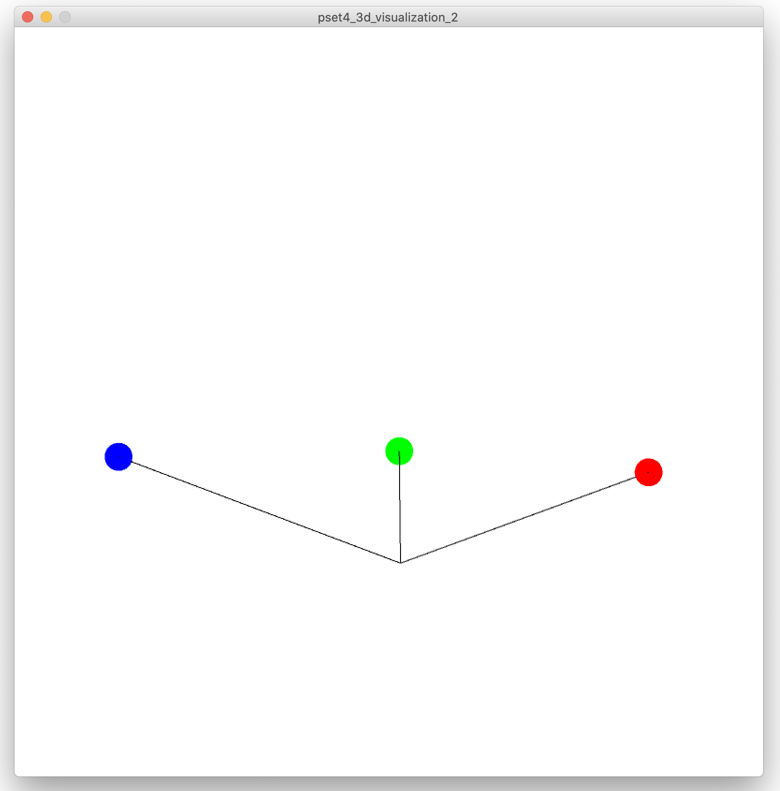
Finally, if you are experiencing some lagging in your application, you can also set the frame rate for the camera for better performance using the line below:
frameRate(30);
Draw the Touch Points and Touch Pressure into the 3D Visualization
Next, you will draw the touch points and the touch pressure into the 3D visualization based on your interpolated PImage from pset3.
Drawing 3D Points in Processing
To implement the touch points, you will create a set of 3D points, where the X,Z coordinates are the row & column number of the pixel on the PImage, and the Y-coordinate is the interpolated value of the pixel.
As mentioned previously, the brighter pixels are in an area the more pressure was applied to this area.
As a result, the brighter a pixel, the higher the touch bar will be at this point.
Mapping the Y-Height to a Color Gradient
You also need to color the touch bars with a color gradient that represents the "height" (i.e. y-axis coordinate) information.
We chose a color gradient of red when only touched with light pressure and yellow when touched with high pressure.
You can choose your own color gradient, just make sure that the colors are very different so you can actually see a difference.
To implement the y-height to color mapping, you may find it helpful to use the map() function again that you already used in pset3.
The resulting 3D visualization should look like something in the following.
One finger touching:
Two fingers touching:
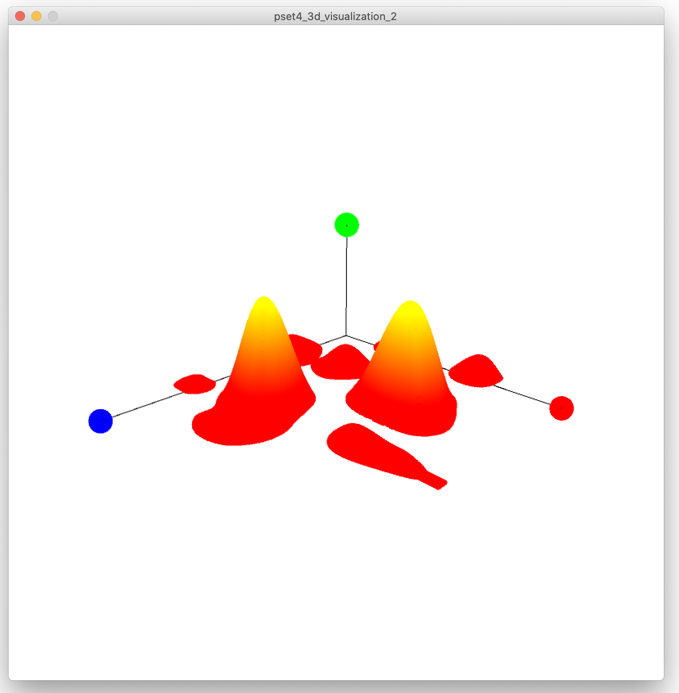
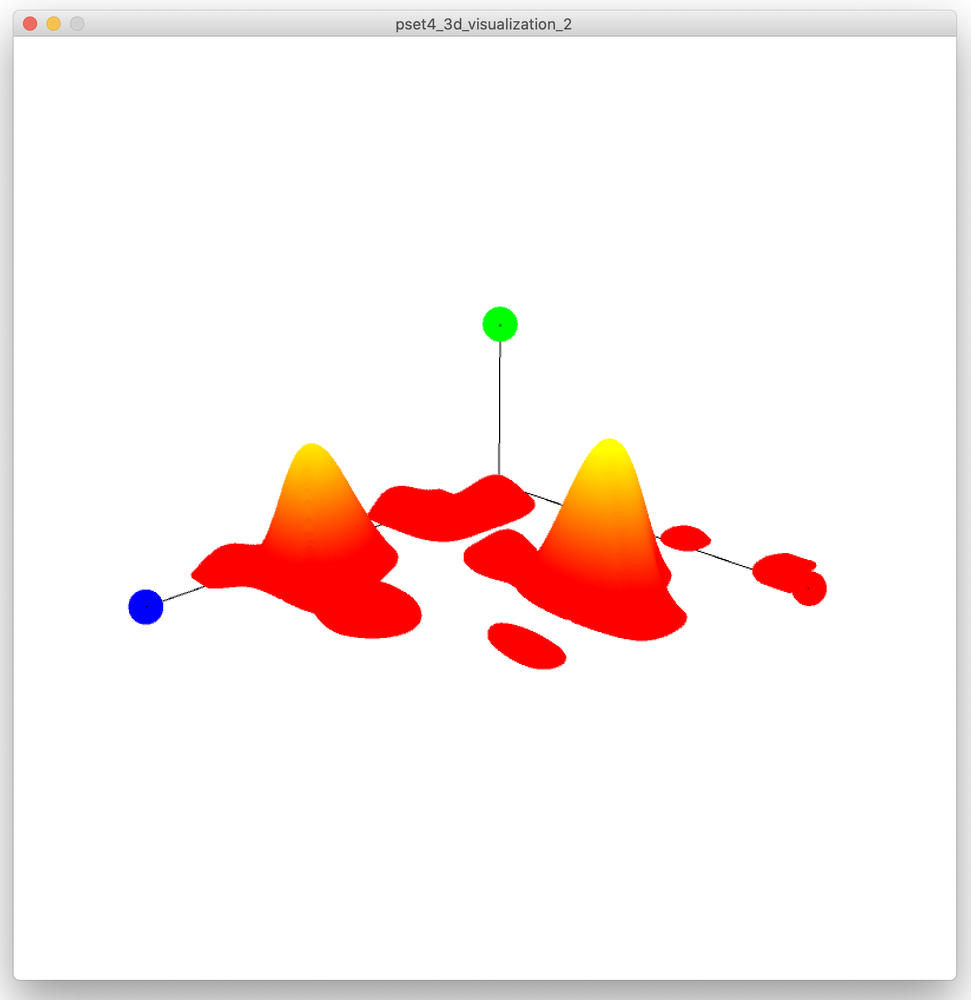
Note that all this noise is because we use the PImage that also contains brightness values outside the recognized 'finger blobs'. If you want a cleaner visualization, you can create a new PImage that has all pixels black except those pixels that belong to a blob. Note that this is not mandatory for this pset but if you'd like some clean output you can experiment with this.
Upload your Processing Code and Video of Gestures
For grading, please upload the following to your google drive student folder:
Gesture Recognizer
- a drawing on paper that shows your 3 custom finger gestures so we know which gestures you implemented, use the same notation as in the pset to indicate the start point for executing the gesture
- the .pde file of your Processing program
- 3 photos showing your Processing UI successfully recognizing the 3 different finger gestures
- a short video showing your Processing UI successfully recognizing the 3 different finger gestures (take the video so that the multi-touch pad and Processing Window are seen at the same time)
Grading
We will give 20 pts in total:
- 5 pts: you implemented the blob detection correctly
- 5 pts: you drew the touch center, outline, and coordinate into the visualization correctly, and showed that your touch pad can recognize 1, 2, and 3 fingers touching correctly.
- 5pts: you implemented 3 different gestures using the learn(), bind(), and track() functions from the $1 Unistroke Recognizer
- 5pts: you submitted a drawing showing all three gestures you implemented and show in the video that all three gestures are correctly recognized
If you have the feeling your printed multi-touch pad is degrading, let us know and we can give you one that we fabricated to test if it's really the multi-touch pad or something in your circuit/code.
import blobDetection.*;import de.voidplus.dollar.*; OneDollar oneDollar = new OneDollar(this);oneDollar.setVerbose(true); // activates console plottingoneDollar.learn(String gesture-name, int[] x-y-coordinates); // {x1, y1, x2, y2, x3, y3, x4, y4, ...} oneDollar.bind(String gesture-name, String callback-function-name); void foo(String gesture-name, float percentOfSimilarity, int startX, int startY, int centroidX, int centroidY, int endX, int endY){
// do something when the gesture is detected
}
oneDollar.track(int x-coordinate, int y-coordinate);